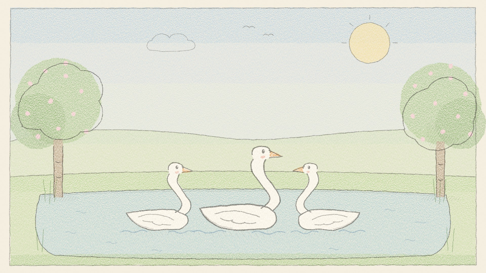

The Ugly Duckling, a bedtime story
The Ugly Duckling by Hans Christian Andersen, retold as a gentle bedtime story. A big grey duckling who looks different from everyone finds out, one spring morning, that he was a swan all along. In this episode: - A big egg that will not hatch - A cat and a hen who think they know everything - A long winter, then a lovely surprise on the water Sources: The Ugly Duckling, Hans Christian Andersen, translated by Mrs. H. B. Paull (Wikisource) Music: Kevin MacLeod (incompetech.com), CC BY 4.0 Gentle stories for bedtime and story time, told slowly by a warm narrator. luongnv.com/podcast/stories
Listen on Once Upon a Time Show Download MP3 Transcript
Also in: Tiếng Việt
Based on The Ugly Duckling by Hans Christian Andersen